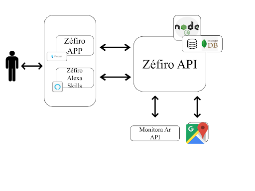

Representação Arquitetural
1.Diagrama de Relações

O estilo arquitetural de microsserviços é uma abordagem que visa implementar uma aplicação como uma suíte de pequenos serviços. Onde cada um executa um processo próprio e se comunica, geralmente, com requests HTTP. Em 2016, o termo micro frontend foi falado pela primeira vez no Thoughtworks Technology Radar, com o intuito de estender o conceito de microsserviços para o desenvolvimento frontend, onde cada uma desses “serviços” precisam ser completamente isolados dos outros com tecnologias e objetivos próprios.
Tendo em vista as principais características desses dois estilos arquiteturais o software Zéfiro será criado com base neles. Onde teremos um microsserviço para o backend, chamado de Zéfiro API e dois micro frontends sendo eles, o Zéfiro APP e o Zéfiro Alexa Skills. Cada um desses três serviços terão seu próprio repositório, de forma que estes possuam ambiente de desenvolvimento, tecnologias, integração contínua e deploy específicos.
O software Zéfiro será dividido em três serviços independentes:
-
Zéfiro APP
-
Zéfiro Alexa Skills
-
Zéfiro API
Para o desenvolvimento do software, faz-se necessário o consumo de dados de fontes externas, sendo elas:
-
Google Maps API
-
Monitora Ar API
A Monitora Ar API será criada de forma independente ao Zéfiro. De forma a garantir qualidade e segurança dos dados fornecidos pela estação de monitoramento de ar.
2.Representação dos Serviços
2.1 Zéfiro APP
O Zéfiro APP será uma aplicação mobile responsável pelo contato direto com o usuário. Esta precisará seguir uma arquitetura da informação bem definida e garantir acessibilidade. Ela é responsável também por exibir um gráfico com o histórico do indicador de qualidade do ar, apresentar informações sobre quais elementos o usuário está respirando naquele momento e um mapa com as estações de monitoramento do ar. Precisa ainda enviar notificação para o usuário e exibir um alerta de fumaças.
2.2 Zéfiro Alexa Skills
O Zéfiro Alexa Skills será uma aplicação que faz interação com o usuário por meio de comandos de voz. Ela será responsável por responder como está a qualidade do ar, com base na faixa de qualidade do ar internacional, qual foi a qualidade do ar nos últimos sete dias e quais são os elementos químicos que o usuário está respirando no momento do seu pedido.
2.3 Zéfiro API
O Zéfiro API é responsável por lidar com o core do projeto, - monitoramento da qualidade do ar. Para isso ele possui diversas funcionalidades. A principal delas é o cálculo da qualidade do ar, feita de acordo com a faixa de qualidade do ar internacional e utilizando as informações dos elementos químicos coletados, para que com isso possa existir a criação de gráficos que serão apresentados ao usuário.
Além do cálculo, as informações de quais elementos químicos estão presentes, suas quantidades e o indicativo de fumaça serão disponibilizados para o usuário. Além disso, o Zéfiro APP precisará fazer o envio de notificações ao usuário sempre que a qualidade do ar estiver baixa.
A última funcionalidade presente neste serviço é a exibição de uma mapa contendo todas as estações de monitoramento do ar e seus respectivos status. Para isso ser feito será necessário o consumo da Google Maps API, de forma que auxilie a criação desse mapa de forma mais segura.
3. Tecnologias
3.1 Flutter
O Flutter é o framework construído pela Google com objetivo de facilitar o desenvolvimento de aplicativos móveis, multiplataforma. Utiliza o Dart como linguagem de programação. As principais alternativas à escolha do flutter são: React-Native e desenvolvimento nativo. Ao comparar as alternativas apresentadas o flutter foi escolhido pois, apresenta melhor desempenho em alguns aspectos como memória e uso de CPU, principalmente comparado ao React-Native. Já em comparação com o desenvolvimento nativo, apesar do desempenho ser muito parecido, o flutter vence pela possibilidade do desenvolvimento multiplataforma, exigindo menos recursos para alcançar um público maior. Além dos aspectos técnicos de cada abordagem, foi levada em conta a familiaridade de parte da equipe com o flutter.
3.2 MongoDB
O MongoDB é uma base de dados baseada em NoSQL, orientada à objetos, que são mantidos como documentos dentro de coleções, em vez de colunas dentro de tabelas, como é feito em bancos relacionais. O MongoDB apresenta características como: alta disponibilidade, alta performance, fácil escalabilidade, flexibilidade e possui recursos para auxiliar aplicações baseadas em dados geoespaciais, tais como o Zéfiro. Além dos aspectos técnicos do MongoDB, foi levada em conta a experiência da equipe com esta tecnologia.
3.3 Node Js
Node Js é um ambiente de execução, open-source, que permite o desenvolvimento de aplicações utilizando o JavaScript como linguagem de programação. As principais vantagens da escolha do Node Js são: Performance, disponibilidade e variedade de pacotes reutilizáveis, comunidade/ecossistema muito ativo, e alta disponibilidade de documentação. Além destas vantagens, o fato da equipe possuir experiência com esta tecnologia, também motivou a escolha.
3.4 Alexa
A Alexa é um serviço de voz baseado em nuvem da Amazon. É compatível com diversos dispositivos, e permite que o usuário interaja com a tecnologia, de forma mais intuitiva. O Alexa Skill Kit será utilizado no desenvolvimento do Zéfiro Alexa Skill, disponibilizando ao usuário uma interface alternativa para uso das funcionalidades do Zéfiro.
3.5 Google Maps API
Trabalhar com dados relacionados ao monitoramento da qualidade do ar, através de estações distribuídas geograficamente, traz a necessidade da obtenção dos respectivos dados geográficos. O Google Maps Platform possui diversos serviços para fornecimento deste tipo de dado, e o valor cobrado é proporcional ao uso. É uma plataforma de alta disponibilidade e confiabilidade, além de fornecer um crédito mensal gratuito, disponibiliza serviços para fornecimento de mapas estáticos e dinâmicos, gratuitamente, dentro da taxa de uso estabelecida, para uso em dispositivos móveis.
4. Referências
JACKSON, Cam; Micro Frontends; Disponível em: <https://martinfowler.com/articles/micro-frontends.html>; Acesso em 10 de setembro de 2020;
LEWIS, James; FOWLER, Martin; Microsserviços em poucas palavras; Disponível em: <https://www.thoughtworks.com/pt/insights/blog/microservices-nutshell>; Acesso em 20 de setembro de 2020.
GEERS, Michael; Micro Frontends extending the microsservice idea to frontend development; Disponível em <https://micro-frontends.org/>; Acesso em 10 de setembro de 2020.
DEMEDYUK, Ihor; TSYBULSKYI, Nazar; Flutter vs Native vs React-Native: Examining performance. Disponível em: <https://medium.com/swlh/flutter-vs-native-vs-react-native-examining-performance-31338f081980>; Acesso em 10 de setembro de 2020;
JAYARAM, Prashanth; When to Use (and Not to Use) MongoDB; Disponível em <https://dzone.com/articles/why-mongodb#:~:text=The%20motivation%20of%20the%20MongoDB,BSON%20documents%20to%20store%20data>; Acesso em 10 de setembro de 2020;
Introdução Express/Node. MDN, 2020; Disponível em: <https://developer.mozilla.org/pt-BR/docs/Learn/Server-side/Express_Nodejs/Introdu%C3%A7%C3%A3o>; Acesso em 10 de setembro de 2020;
APIs de geolocalização. Google Maps Platform; Disponível em: <https://cloud.google.com/maps-platform>; Acesso em 10 de setembro de 2020;
What is Alexa? Amazon Alexa Official Site. Disponível em: <https://developer.amazon.com/pt-BR/alexa>; Acesso em 10 de setembro de 2020;